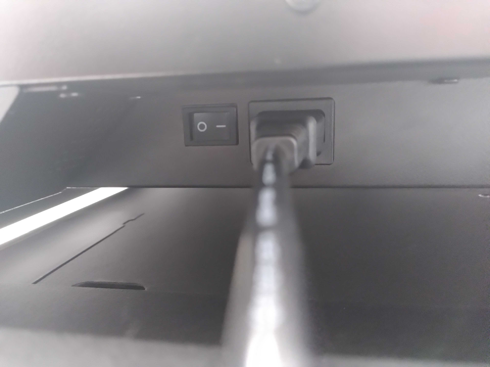
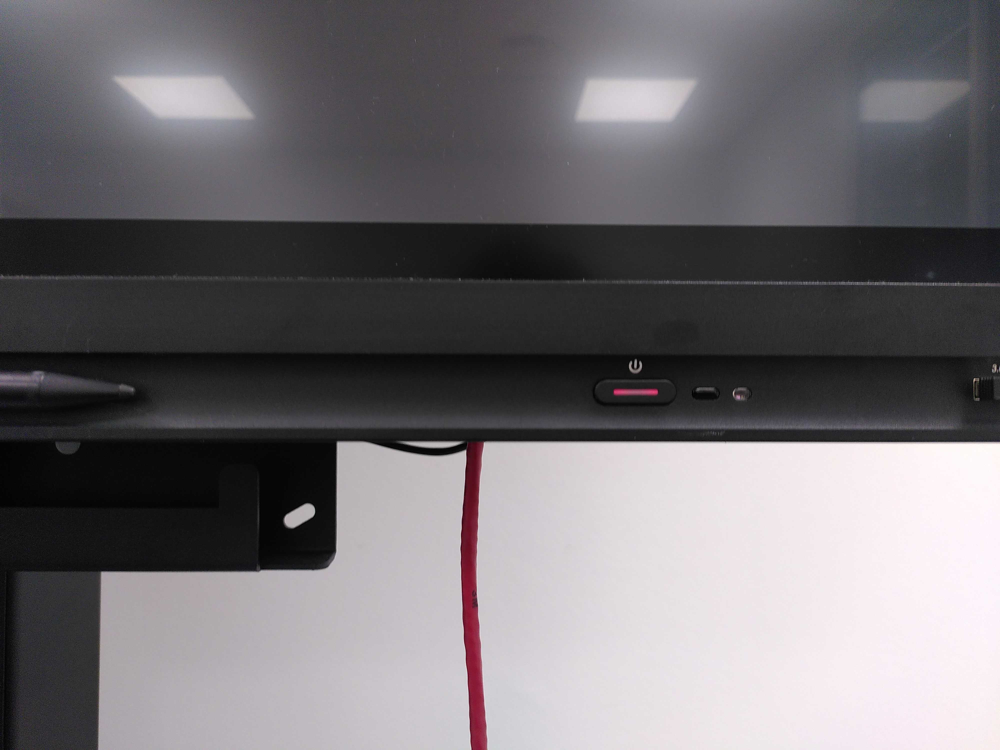
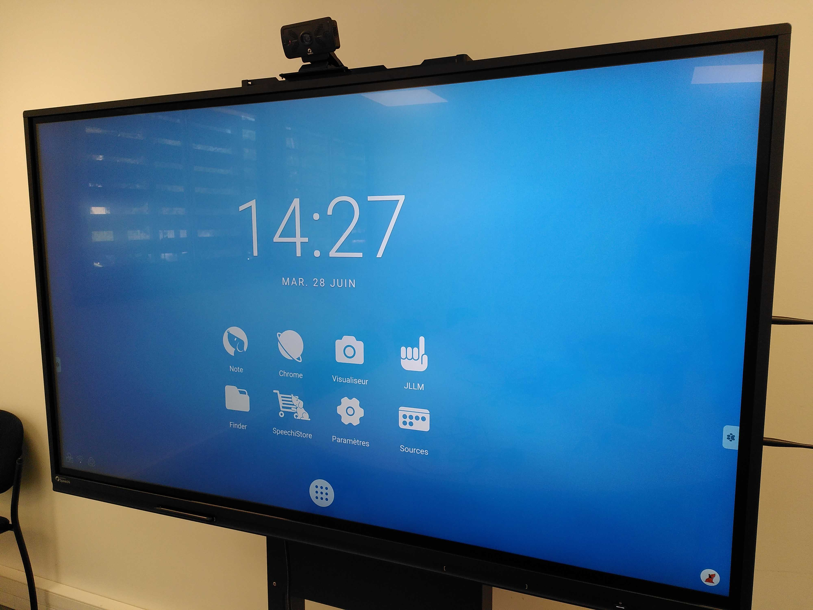
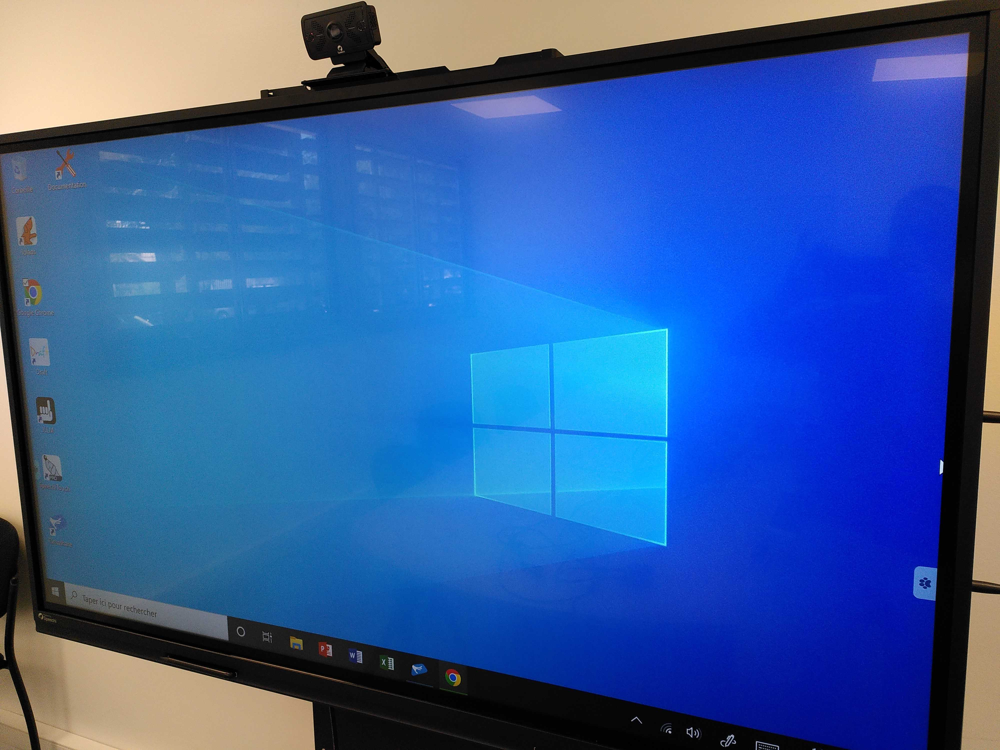
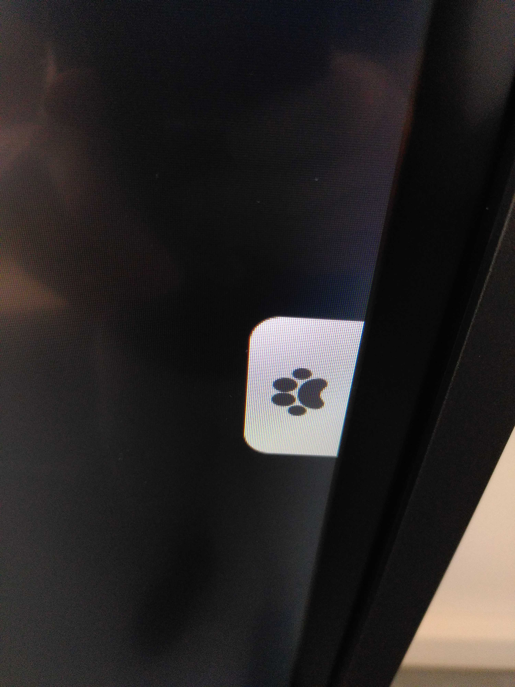
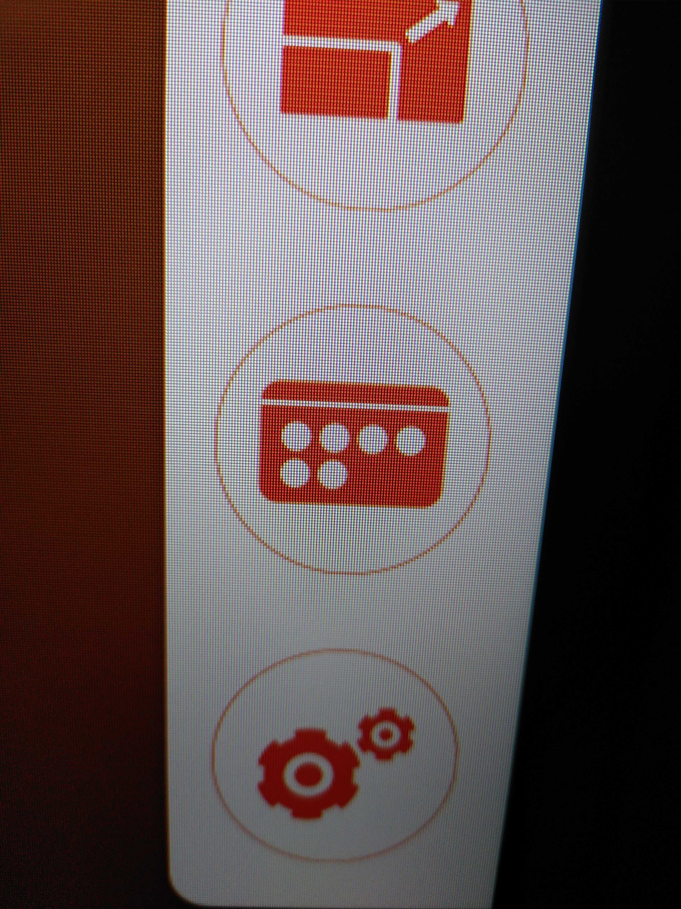
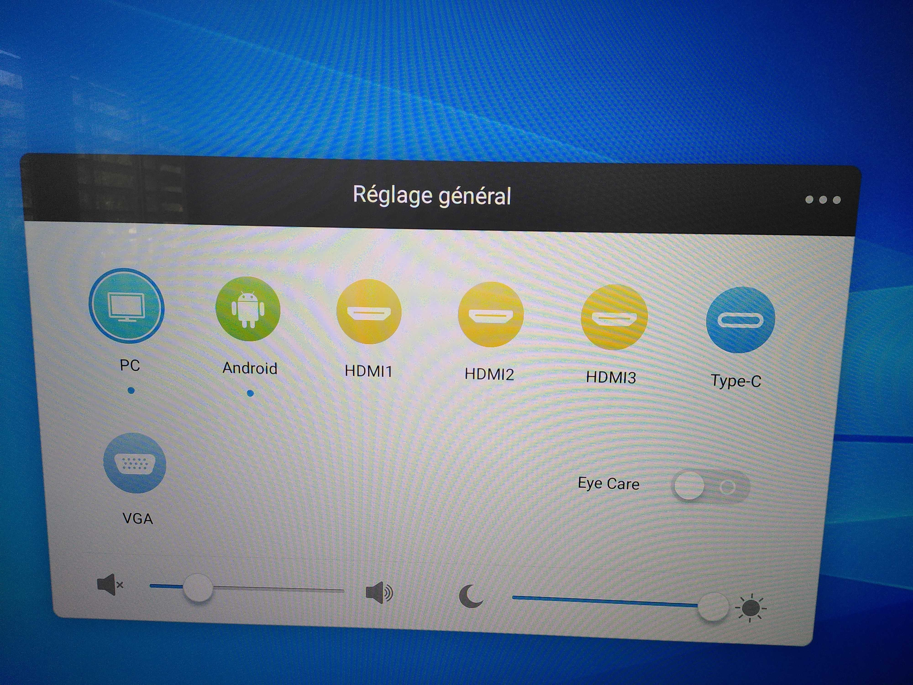

Utilisation écrans intéractifs Speechi
![]()
Precautions d’usage et bonnes pratiques
Avant de commencer, voici quelques précautions d’usage et bonnes pratiques avant l’utilisation des écrans.
- Manipuler avec précaution les pieds lors des déplacements des écrans.
- Procéder avec précaution lors de l’ajustement en hauteur (via les poignées).
- Eteindre complètement les écrans après utilisation (bouton situé sous l’écran au niveau de l’alimentation)
- Replier les antennes du PC (côté de l’écran)
Matériel
Chaque écran est livré avec:
- 1 cable HDMI
- 1 cable USB
- 1 cordon d’alimentation
- 1 télécommande
- 2 stylets
- 1 clavier sans fil
Merci de ne pas emporter ce matériel avec vous!
Note: en salle ScenarioLab, utiliser le clavier qui correspond à l’écran utilisé (cf. étiquettes).
Allumage
Pour allumer les ecrans il faut:
- Allumer l’interrupteur situe en dessous, a cote de l’entree du cable d’alimentation (Figure 1 (a)). Le bouton situe sur le devant de l’ecran devient rouge
- Allumer le bouton situe sur le devant de l’ecran (Figure 1 (a))


Double système
Les écrans sont équipés de deux systèmes indépendants:
- 1 système Android (Figure Figure 2 (a))
- 1 système Windows (Figure Figure 2 (b))


Pour changer de systeme, cliquer sur le symbole “Patte” sur un des côtés de l’écran (Figure Figure 3 (a)), puis sur le symbole “Source” (carré contenant 6 cercles, cf. Figure Figure 3 (b)).
Pour utiliser le système Windows, choisir “PC”, pour choisir le système Android, cliquer sur “Android” (Figure Figure 4).
Note: cette manipulation permet aussi de changer la source, par exemple si on branche un PC sur port HDMI ou autre.



Connection
Depuis le systeme Windows, il y a deux possibilites de connection.
L’utilisateur peut choisir de se connecter via son adresse Ifremer en specifiant son adresse mail (par exemple nbarrier@ifremer.fr, en remplacant nbarrier par le login Intranet). Il faudra ensuite renseigner son mot de passe Ifremer.
Ou alors l’utilisateur peut choisir de se connecter sur une session anonyme. Pour cela, il faut se connecter en tant que SpeechiTouch (pas de mot de passe).
Si vous rencontrez des difficultes pour vous connecter en anonyme, specifier le nom de la machine comme indique Table 1.
| Ecran | Login |
|---|---|
| Salle Mediterannee | SPEECHI-MED\SpeechiTouch |
| Scenario Lab (ecran 1) | SPEECHI-SCEN1\SpeechiTouch |
| Scenario Lab (ecran 2) | SPEECHI-SCEN1\SpeechiTouch |
Zoom et Teams
Les écrans sont associés à une caméra, permettant des visioconférences “petite échelle”.
Pour lancer Zoom depuis l’interface Windows, cliquer sur le bouton “Démarrer” et rechercher l’application Zoom. Sur le systeme Windows, Microsoft Teams est aussi installe.
Pour lancer Zoom depuis l’interface Android, cliquer sur le symbole Applications (en bas au centre de l’ecran, Figure Figure 2 (a)). Puis choisir Zoom parmi les applications.
Licences
Pour utiliser certains logiciels, certains numeros de licences pourraient vous etre demandes.
Draft:
- FD59-4954-32E0-3253
- C300-77FD-5F76-1675
- 5653-EAF6-0414-F77C
IOLAOS:
- 21506-01450-00077-89518
- 21506-01450-00034-83053
- 21506-01450-00070-01069
SOFA:
- 7XDZTNE20JWJ
- QENIY8SIW060
- E1D7A8Y80QBS